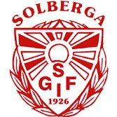

Solberga GoIF

Placement last year:
2nd place, division 5 (qualified for division 4)
Name and role in the team:
Not answered yet
What are your goals for the season?
Not answered yet
Any changes in the squad for this season?
Not answered yet
Who in the team will play a big role this season and why?
Not answered yet
Which team are you looking forward to play against this season and why?
Not answered yet
Which team do you think will win this year?
Not answered yet